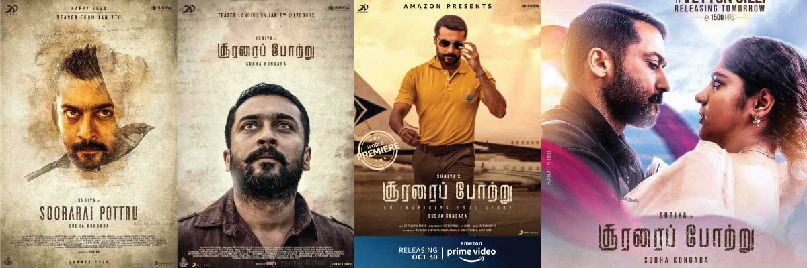
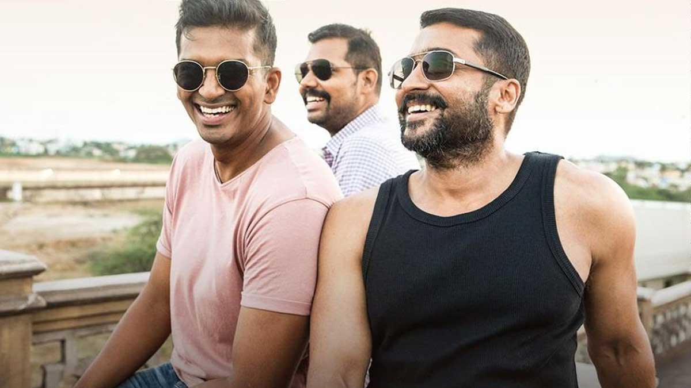

Soorarai Pottru is marred by the high-pitched melodrama whistled up every time the script needs to create fan-pleasing moments. Given Suriya’s mega popularity, that is an always present temptation, and the film gives in, much too often.
How a young man with dreams in his eyes owned the skies is the story of Soorarai Pottru, in which Suriya plays Nedumaran Rajangam, the pioneer of low-cost aviation in India. Maaran (Suriya), a thinly-disguised version of G R Gopinath and his prolonged battle to start Air Deccan, overcomes one obstacle after another, to put the common man (and woman) in an aircraft, making flying universally accessible.
It is an uplifting underdog tale, where victory was hard-fought, and won. Going by the goings-on in Sudha Kongara’s directorial, Maaran’s troubles were never-ending. His number one enemy, the snooty, elitist Paresh Goswami (Rawal), who wants to prevent ‘coolies and beggars’ from stepping into his airline, keeps snapping at his heels. A corrupt, complicit babu in the Ministry of Civil Aviation keeps finding rules to stop him. And the lack of funds is a continual struggle. What keeps Maaran going is the love of a good woman, Bommi (Balamurali), the belief of countless people from his village, led by his mother (Urvashi), and his conviction that he can do it.
Given all these elements, each more dramatic than the other, the film should have soared. And it does in parts, especially when Suriya and Aparna are jousting, him showing his softer aspects, her refreshingly real, brimming with spunk. As well as some other sequences in which he, along with his two faithful pals, goes full tilt at the challenges strewn in his way: it is Suriya’s way, all the way.
The film is marred, however, by the high-pitched melodrama whistled up every time the script needs to create fan-pleasing moments. Given Suriya’s mega popularity, that is an always present temptation, and the film gives in, much too often. A sequence in which Maaran arrives home to confront his mother’s teary recriminations for missing out on a crucial happening would have been a better fit in a masala entertainer. Oh wait: is this why it is in this movie, which insists on dousing real life with loud reel tamasha?
The film is careful to tell us that it is ‘not’ a biopic, and that it is based on ‘several true stories from low-cost aviation’, so we never quite know who is real, and who has emerged from the creative license claimed by the filmmakers. There’s a Mallya-like character called Ballaiya, who mentions his ‘beer company’ and fun-loving ways. Both Ballaiya and Goswami are drawn as caricatures, as are many other characters who are simply stock, only there to buff up the film’s run-time.
But the incredibly inspirational nature of the story, in which a common man creates history by starting ‘the Udupi hotel of the airline industry’ comes through. Gopinath’s venture meant that class and caste barriers (Suriya speaks of this) were swept aside, and the average Indian could fly. Those faces, wreathed in delight, are the most pleasing takeaways from the film.
About eight or nine years ago, I embarked on a project to explore why very few women were making mainstream Tamil films. One of the directors I spoke to at the time, who was pitching a murder mystery to producers at the time, said that she often heard, “neenga our rom com try panlaame.” (why don’t you do a rom com instead!) Many women aspiring to make films told me similar stories at the time.
Today, when I saw Che (the 'socialist' shortening of the name Chaitanya, I bet) land a plane, in a tense yet action-packed scene within the first few minutes of Sudha Kongara’s Soorarai Pottru, I had a tear in my eye. Well, I cried several times after that, but this one was special. I was rooting for Maaran, the protagonist, to achieve his dreams, as much as I was rooting for Kongara to make Soorarai Pottru work.
.gif)